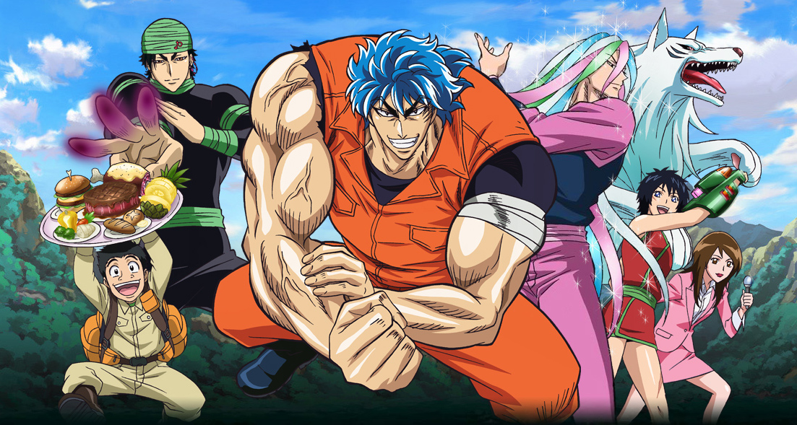

トリコ
あらすじ
世は「美食」が世界的流行となっている「グルメ時代」。
世界中に未知の食材が溢れ、一つの食材に億単位の大金が動くことも珍しくない。
国際グルメ機関IGOを通し、ホテルグルメの若き料理長・小松は、未開の味を探求し、
自分の「人生のフルコース」の完成を夢とする美食屋・トリコにガララワニの
捕獲を依頼する。トリコの狩りに同行した小松はその姿に感動し、以降はトリコと
その仲間、美食屋四天王の狩りに同伴することに。しかし、そんな彼らに危険な
秘境に生息する凶暴な猛獣や世界中の食材の独占を狙いIGOと対立する
組織・美食會が襲い掛かり、目的の食材を巡って激しい戦いが繰り広げられる。
